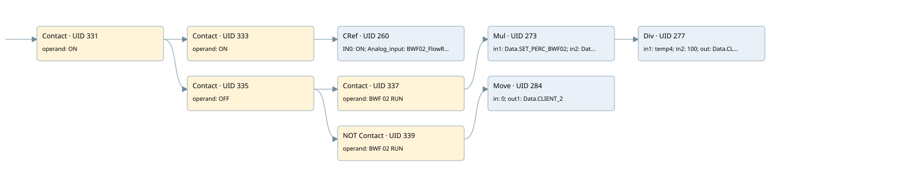

client 2 bwf02 flow rate
analog input conversion · 검색 색인 순서 6 · 원본 내부 NID 추정 6
백업 PLF 원본의 3116141 바이트 위치에서 복원한 XML. 검색 문서 1736의 객체 키 16102200146b000000000000와 연결했다. 이름 해석 19/19개. 남은 RefId는 상수 또는 미해석 참조다.
연결 구조 다시 그리기
원본 Part/PCon/Wire를 이용한 연결도다. TIA 화면의 래더 배치 또는 실행 결과를 재현한 그림은 아니다. 핀 연결은 아래 표와 원본 XML을 기준으로 읽는다. 노드 위에 마우스를 두면 피연산자 이름을 볼 수 있다.

접점·코일·블록과 피연산자
| Part UID | Gate | Negated 핀 | 연결 피연산자 |
|---|---|---|---|
| 331 | Contact | operand = ON | |
| 333 | Contact | operand = ON | |
| 260 | CRef | 호출 참조: Signal linearization; IN0 = ON; Analog_input = BWF02_FlowRate; Coeff = Coeff.COEFF_BWF2_FEEDER_FLOW_RATE; Zero = Coeff.ZERO_BWF2_FEEDER_FLOW_RATE; OutValue = Data.CLIENT_2; Out_of_range = Allarm.Flow_rate_BWF02_OFR | |
| 335 | Contact | operand = OFF | |
| 337 | Contact | operand = BWF 02 RUN | |
| 273 | Mul | in1 = Data.SET_PERC_BWF02; in2 = Data2.Set_TH; out = temp4 | |
| 277 | Div | in1 = temp4; in2 = 100; out = Data.CLIENT_2 | |
| 339 | Contact | operand | operand = BWF 02 RUN |
| 284 | Move | in = 0; out1 = Data.CLIENT_2 |
접점 경로를 펼친 조건식
Contact·O/A·비교기의 원본 연결을 읽기 쉽게 펼친 보조 해석이다. POWER는 전원 레일 시작을 뜻한다. 호출 블록·에지·타이머의 내부 동작과 다중 쓰기 순서는 이 표로 실행 검증하지 않았다. 미해석 핀과 RefId는 원문 연결표에서 확인한다.
| UID | 동작 | 대상 | 원본 접점 경로 | 내용 |
|---|---|---|---|---|
| 284 | Move | Data.CLIENT_2 | ((ON AND OFF) AND NOT [BWF 02 RUN]) | Move 입력 0 |
원본 배선 연결
| Wire UID | 동일 Wire 연결 끝점 |
|---|---|
| 341 | Powerrail {} ↔ Part 331.in |
| 307 | ORef 287 (ON) ↔ Part 331.operand |
| 332 | Part 331.out ↔ Part 333.in ↔ Part 335.in |
| 308 | ORef 289 (ON) ↔ Part 333.operand |
| 334 | Part 333.out ↔ Part 260.en |
| 310 | ORef 290 (ON) ↔ Part 260.IN0 |
| 311 | ORef 291 (BWF02_FlowRate) ↔ Part 260.Analog_input |
| 312 | ORef 292 (Coeff.COEFF_BWF2_FEEDER_FLOW_RATE) ↔ Part 260.Coeff |
| 313 | ORef 293 (Coeff.ZERO_BWF2_FEEDER_FLOW_RATE) ↔ Part 260.Zero |
| 314 | Part 260.OutValue ↔ ORef 294 (Data.CLIENT_2) |
| 24 | Part 260.Out_of_range ↔ ORef 23 (Allarm.Flow_rate_BWF02_OFR) |
| 315 | ORef 296 (OFF) ↔ Part 335.operand |
| 336 | Part 335.out ↔ Part 337.in ↔ Part 339.in |
| 316 | ORef 297 (BWF 02 RUN) ↔ Part 337.operand |
| 338 | Part 337.out ↔ Part 273.en |
| 318 | ORef 298 (Data.SET_PERC_BWF02) ↔ Part 273.in1 |
| 319 | ORef 299 (Data2.Set_TH) ↔ Part 273.in2 |
| 321 | Part 273.eno ↔ Part 277.en |
| 320 | Part 273.out ↔ ORef 300 (temp4) |
| 322 | ORef 301 (temp4) ↔ Part 277.in1 |
| 323 | ORef 302 (100) ↔ Part 277.in2 |
| 324 | Part 277.out ↔ ORef 303 (Data.CLIENT_2) |
| 325 | ORef 304 (BWF 02 RUN) ↔ Part 339.operand |
| 340 | Part 339.out ↔ Part 284.en |
| 327 | ORef 305 (0) ↔ Part 284.in |
| 328 | Part 284.out1 ↔ ORef 306 (Data.CLIENT_2) |
식별자 해석 근거 19개
| ORef UID | RefId | 이름 | IdentXmlPart 파일 | 해석 방법 |
|---|---|---|---|---|
| 287 | 1 | ON | 0678-IdentXmlPart.xml | UID/RID + search-text + NID agreement |
| 289 | 1 | ON | 0678-IdentXmlPart.xml | UID/RID + search-text + NID agreement |
| 290 | 1 | ON | 0678-IdentXmlPart.xml | UID/RID + search-text + NID agreement |
| 291 | 46 | BWF02_FlowRate | 0678-IdentXmlPart.xml | UID/RID + search-text + NID agreement |
| 292 | 47 | Coeff.COEFF_BWF2_FEEDER_FLOW_RATE | 0676-IdentXmlPart.xml | UID/RID + search-text + NID agreement |
| 293 | 48 | Coeff.ZERO_BWF2_FEEDER_FLOW_RATE | 0676-IdentXmlPart.xml | UID/RID + search-text + NID agreement |
| 294 | 49 | Data.CLIENT_2 | 0676-IdentXmlPart.xml | UID/RID + search-text + NID agreement |
| 23 | 365 | Allarm.Flow_rate_BWF02_OFR | 0676-IdentXmlPart.xml | UID/RID + search-text + NID agreement |
| 296 | 34 | OFF | 0678-IdentXmlPart.xml | UID/RID + search-text + NID agreement |
| 297 | 50 | BWF 02 RUN | 0678-IdentXmlPart.xml | UID/RID + search-text + NID agreement |
| 298 | 52 | Data.SET_PERC_BWF02 | 0676-IdentXmlPart.xml | UID/RID + search-text + NID agreement |
| 299 | 39 | Data2.Set_TH | 0676-IdentXmlPart.xml | UID/RID + search-text + NID agreement |
| 300 | 40 | temp4 | 0677-IdentXmlPart.xml | UID/RID + search-text + NID agreement |
| 301 | 40 | temp4 | 0677-IdentXmlPart.xml | UID/RID + search-text + NID agreement |
| 302 | 42 | 100 | 0675-IdentXmlPart.xml | literal candidate: UID/RID/NID + nearby named declarations + search-text agreement |
| 303 | 49 | Data.CLIENT_2 | 0676-IdentXmlPart.xml | UID/RID + search-text + NID agreement |
| 304 | 50 | BWF 02 RUN | 0678-IdentXmlPart.xml | UID/RID + search-text + NID agreement |
| 305 | 44 | 0 | 0675-IdentXmlPart.xml | literal candidate: UID/RID/NID + nearby named declarations + search-text agreement |
| 306 | 49 | Data.CLIENT_2 | 0676-IdentXmlPart.xml | UID/RID + search-text + NID agreement |
검색 코드 보조 자료
참조 명칭을 찾기 위한 자료이며 실행 순서나 AND/OR 관계는 위 연결표로 확인한다.
"on" "on" "signal linearization" "on" "bwf02_flowrate":p "coeff".coeff_bwf2_feeder_flow_rate "coeff".zero_bwf2_feeder_flow_rate "off" "bwf 02 run" mul "data".set_perc_bwf02 "data2".set_th div #temp4 100 "bwf 02 run" move 0 "data".client_2 #temp4 "data".client_2 "data".client_2 "allarm".flow_rate_bwf02_ofr